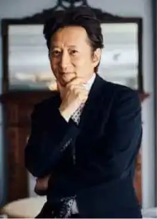
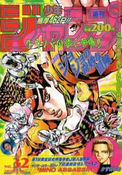
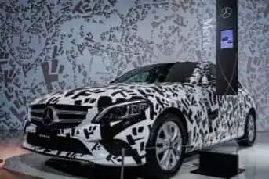
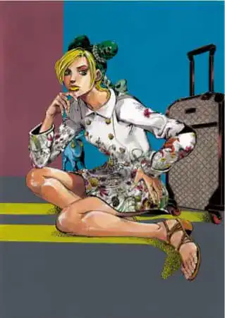
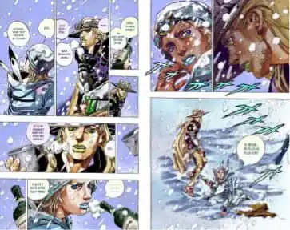

JoJo's Bizarre Adventure is a manga created in 1988 by the famous author Hirohiko Araki. It consists of 8 different parts, which are all different from each other with different protagonsites, but all linked from beginning to end.
Picture of Hirohiko Araki
- Part 1 : Phantom Blood (Jonathan Joestar)
- Part 2: Battle Tendency (Joseph Joestar)
- Part 3 : Stardust Crusaders (Jotaro Kujo)
- Part 4 : Diamond is Unbreakable (Josuke* Higashikata)
- Part 5 : Golden Wind (Giorno Giovana)
- Part 6 : Stone Ocean (Jolyne Kujo/Cujoh)
- Part 7 : Steel Ball Run (Johnny Joestar)
- Part 8 : JoJolion (Josuke* Higashikata)
*The "Suke" in Josuke can also be pronounced "Jo".
First published between 1986 and 2004 in Weekly Shônen Jump (WSJ) then in 2005 in the Ultra Jump, which is a catalog specialized in mangas intended for an adult audience.
Cover of a WSJ showing Josuke
This extremely wacky story follows the life and adventures of the Joestar family over several generations. A single enemy is the cause of all the events that plague the Joestar tormenting the Joestar family, Dio Brando.
His actions have an absurd butterfly effect, going from fighting vampires in part 1 (Phantom Blood) and part 2 (Battle Tendency).
A hunt against a common enemy, with a very absurd humor and characters muscled in an aberrant way in part 3 (Stardust Crusaders).
Which follows with a story with a detective genre in part 4 (Diamond is Unbreakable).
And a drama in the middle of the Italian Mafia in part 5 (Golden Wind).

Joseph Joestar fighting a vampire.

Jotaro Kujo, having just found and caught a serial killer.

Giorno Giovanna, having finally obtained the position of godfather of the mafia.
JJBA (acronym of JoJo's Bizarre Adventure) is one of the most sold manga in the world with more than 100 million volumes sold almost everywhere in the world. This success has allowed them to make collaborations with many brands, especially luxury brands. Among all the collaborations there are :
- Mercedes, who created a car with a body. containing Japanese onomatopoeia that are unique to JoJo's.
- Gucci, who published in stores and posted on social networks characters from JoJo's with Gucci clothes and accessories.

- Balenciaga, a character of jojo dressed in Balenciaga on a cover of Vogue "Uomo" catalog.

- Seiko, luxury watch brand that have created a series of watches in the effigy of JoJo's.
I wrote this article because a few years ago, I discovered this work for the first time, I had never read a story so well written, funny, intriguing, engaging with a unique power system.
So I would like to share with you some of the drawings of this manga that I really liked.
